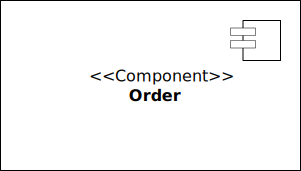

Overview of UML Structure Diagrams
What are Structure Diagrams?
UML structure diagrams represent the static aspects of a system by:
- Visualizing system architecture and components
- Illustrating relationships and interactions between elements
- Documenting the structural foundation of software designs
- Providing a standardized notation for communication among stakeholders
Types of Structure Diagrams
- Class Diagram: The foundation of object-oriented modeling showing classes, attributes, methods, and relationships.
- Object Diagram: Concrete examples of class structures providing snapshots of the system with actual data.
- Package Diagram: High-level organization of system elements into cohesive packages with their dependencies.
- Component Diagram: Modular system design showing building blocks and their interfaces with dependencies.
- Composite Structure Diagram: Internal composition of elements illustrating how parts collaborate within a class.
- Deployment Diagram: System implementation planning mapping software artifacts to physical hardware nodes.
- Profile Diagram: Extensions to UML through custom stereotypes, tagged values, and constraints.
UML Class Diagrams
Example
What are Class Diagrams?
Class diagrams are the foundation of object-oriented modeling, providing:
- A blueprint of the system’s classes, attributes, methods, and relationships
- The static structure that underpins dynamic system behavior
- A powerful tool for communicating design decisions among stakeholders
- The most frequently used diagram type in UML
Class diagrams bridge the gap between conceptual models and actual implementation code.
Class
A class serves as a blueprint for creating objects. Classes provide structure, promote code reuse, and model real-world concepts in software systems. Classes are divided into three compartments.

- Name: A unique identifier for the class (e.g.,
BankAccount).
- Attributes: The properties or data associated with the class (e.g.,
accountNumber,balance).
- Operations: The actions or methods that objects of the class can perform (e.g.,
deposit(),updateBalance()).
Visibility Markers
Visibility markers indicate the accessibility of attributes and methods within a class.
+(Public): The attribute or method is accessible from any class.
-(Private): The attribute or method is accessible only within the same class.
#(Protected): The attribute or method is accessible within the same class and its subclasses.
~(Package-private): The attribute or method is accessible within the same package.
Attributes
Attributes in a UML class diagram represent the properties or data fields of a class. They are typically written in the following format:
visibility(optional) specifies access control (+for public,-for private,#for protected,~for package-private).
nameis the attribute’s identifier.
typedefines the data type of the attribute.
multiplicity(optional) specifies how many values the attribute can hold when representing an internal collection.= defaultValue(optional) assigns an initial value to the attribute.
Methods
Methods (also called operations) in a UML class diagram represent the functions or behaviors that a class can perform. They are typically written in the following format:
visibility(optional) specifies access control (+for public,-for private,#for protected,~for package-private).
nameis the method’s identifier.
parameterListdefines the method’s input parameters, including their names and types.
returnTypespecifies the type of value the method returns.
UML Object Diagrams
Example
What are UML Object Diagrams?
UML object diagrams illustrate specific instances of classes and their relationships at a particular moment in time. They visually resemble class diagrams but focus on concrete examples rather than general structures.
Object diagrams are viewed as special cases of class diagrams:
- They show specific objects (instances), not general classes.
- They highlight links between objects, illustrating actual relationships.
- They reflect details such as multiplicity and roles clearly, using concrete examples.
What’s the difference between a Class and an Object?
Object Diagrams are a complement to Class Diagrams, helping you understand how your designs actually behave when they’re running.
- Class: A blueprint for a house. It defines what a house will have – number of bedrooms, color, materials, etc. It’s a general template.
- Object: An actual house built from that blueprint. It has specific values for those things – 3 bedrooms, blue paint, brick walls. It’s a concrete instance.
UML Package Diagrams
Example
What are Package Diagrams?
Package diagrams show the dependencies between different packages in a system, providing a high-level organization of system elements. They help maintain clean architecture by organizing elements into manageable groups.
Package diagrams are used to show:
- How related elements are grouped into cohesive units (packages)
- Dependencies and relationships between different packages
- The system’s logical architecture and namespace structure
Key Uses
Large system organization, dependency management, and architecture layering
Package Notation
Packages can be represented by the notations as shown here:

Fully qualified name of a package has the following syntax:
Name owing the package::Name of the package
For example:
java::util::Date
Dependency Notation
Package diagrams illustrate the organization and dependencies among packages in your system. Each dependency between packages is represented by a dashed line with an arrow pointing from the dependent package to the package being depended upon, often annotated with a stereotype (<<stereotype>>) that specifies the type of dependency.
Use (<<use>>): One package depends on another package’s functionality to work properly. It’s a general form of dependency.
Note
A dependency relationship is shown as a dashed arrow pointing from the client (dependent) package to the supplier (provider) package, indicating that the client package requires the supplier package for its functionality.
Import (<<import>>): One package directly includes public parts of another package, treating them as its own elements.
Access (<<access>>): One package can see and use the public parts of another package without directly importing them.

Merge (<<merge>>): One package combines completely with another package, merging their contents into one.

UML Component Diagrams
Example
What are they?
UML Component Diagrams are used to model the high-level software components and subsystems in service-oriented architectures and component-based development projects, and more importantly, define the interfaces between those components.
The are essential for modular system design, showing:
- The building blocks of larger systems and their interfaces
- How components connect and interact through their provided and required interfaces
- Dependencies and relationships between major system modules
Key Uses
System decomposition, third-party integration planning, reusable module identification, and architecture verification
Components
Components are the fundamental building blocks representing modular parts of a system with well-defined interfaces.
- Function: Define and encapsulate functionality, ensuring modularity and reusability.
- Symbol: Rectangles with the
«Component»stereotype.

Interfaces
Iterfaces define a contract or set of operations that a component promises to provide or requires from other components.
- Function: Define how components communicate with each other.
- Symbols:
- Provided: Complete circle (“lollipop”) at the end represent an interface that the component provides
- Required: Half circle (“socket”) at the end represent an interface that the component requires
Ports
Ports are the defined interaction points on the boundary of a component where access to interfaces is provided or required.
- Function: Encapsulate how the component interacts with the outside world.
- Symbol: Small squares on the component boundary.
Tip
Ports are more common on subsystems as they help manage and organize the potentially numerous interfaces that a subsystem might expose.
Relationships
Relationships depict the connections and dependencies between components and interfaces.
- Function: Depict how components interact and depend on each other, highlighting communication paths and potential points of failure.
- Symbol: Various line and arrow notations.
- Dependency: Dashed line with arrow indicates that one component relies on another.
- Association: Solid line without arrow depicts a permanent relationship between components.
- Assembly Connector: Dashed line connecting a required interface (socket) to a provided interface (lollipop), showing interface implementation.

Artifacts
Artifacts represent physical files or data, such as executable files, libraries, or documentation, that are deployed on nodes.
- Function: Show how software artifacts, like executables or data files, relate to the components.
- Symbol: Rectangles with the
<<artifact>>stereotype.
UML Composite Structure Diagrams
Example
What are Composite Structure Diagrams?
A Composite Structure Diagram in UML is essentially a hybrid that combines elements from several UML diagrams.
It specifically incorporates aspects of:
- Class Diagrams
- Object Diagrams
- Component Diagrams (partially)
In relation to class diagrams, composite structure diagrams:
- Represent internal parts of a class or component.
- Show classes, their properties, and relationships between internal parts.
In relation to object diagrams, composite sructure diagrams:
- Often depict runtime instances (objects).
- Illustrate interconnections or runtime structure.
In relation to component diagrams, composite sructure diagrams partially:
- Represent components and collaboration among internal parts.
- Show assemblies and component interactions clearly.
Key Purpose: Composite Structure Diagrams are useful to:
- Represent internal structures of complex classes.
- Show interactions within classes or components.
- Clarify runtime configurations.
UML Deployment Diagrams
Example
What are they?
Deployment diagrams illustrate the physical arrangement of hardware and software components in a system. They show clearly how software artifacts (executables, libraries, data files) are distributed across hardware nodes (servers, devices).
Specifically, they illustrate:
- Physical topology of the system.
- Deployment of software artifacts onto hardware nodes.
- Communication paths and protocols between nodes.
- Runtime configurations and processing environments.
Key Uses
Infrastructure planning, hardware capacity estimation, deployment strategy development, performance optimization, and clear documentation of physical system architectures.
Profile Diagrams
A profile diagram is a type of structural diagram in the Unified Modeling Language (UML) that serves as a generic extension mechanism for customizing UML models to specific domains or platforms. These extension mechanisms refine the standard semantics in a strictly additive manner, ensuring no contradictions arise with the standard semantics. Profiles are constructed using stereotypes, tagged value definitions, and constraints, which are then applied to particular model elements such as Classes, Attributes, Operations, and Activities. A Profile comprises a set of such extensions that, when combined, tailor UML to a specific domain (such as aerospace, healthcare, or finance) or a particular platform (like J2EE or .NET).
Profile Diagram Example